Welcome to Jeanne Theme Documentation
- Created: September 16, 2018
- Updated: September 16, 2018
- By: UXBARN
- Support: http://uxbarn.ticksy.com/
1. Install the Theme
After downloading the package, please first unzip the main package, then you will see another zip file named jeanne.zip. This file is the one to be uploaded via the WordPress Themes screen.
- Go to Appearance > Themes.
- Click Add New then click Upload Theme. Now you will see the screen as showing on the right.
- Click Choose File and select the jeanne.zip file. Then click Install Now.
- Wait until you see the message "Theme installed successfully". After that, click the Activate link on the screen to start using the theme.
NOTE: If you see the message "Are you sure you want to do this?" after clicking the "Install Now" button and you cannot install the theme, it probably means that your server has some configuration restriction in the "php.ini" file that prevents uploading and executing a large file.
You can instead install the theme via FTP by directly upload the theme files into the theme directory of your WordPress site. The path of the theme directory should look like this:
[root]/wp-content/themes
Here are the steps for how to install the theme using this FTP method: (You can skip this section if the theme is already installed using the admin panel as described above.)
- After extracting the main downloaded package, you will see a file named jeanne.zip. Extract the zip file again then you will get a folder named jeanne. You will see many theme files in the folder such as, functions.php, styles.css, page.php, etc.
- Use an FTP client like FileZilla to access to your hosting and browse to the theme directory (wp-content/themes/).
- Upload the folder you get from step 1 into the theme directory. Make sure to upload the entire jeanne folder including the folder itself (NOT only the files inside). So, as a result, your theme directory should be like "wp-content/themes/jeanne" in this step.
- Log in to your WordPress admin, then go to Appearance > Themes and you will see the theme in the theme list. Just click the Activate link to use the theme.
2. Install Plugins
After the theme is activated, you should see a notification at the top saying that there are some required and recommended plugins to be installed like the below image. (Note that the plugins might be different from the image.):
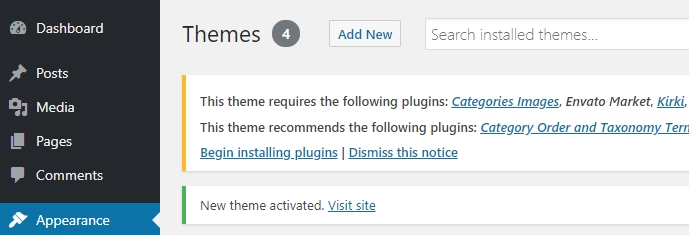
To install and activate them, please follow these steps:
- Click the Begin installing plugins link or go to Appearance > Install Plugins.
-
You will see a list of plugins. Tick all of them then choose Install from the select list and click Apply:
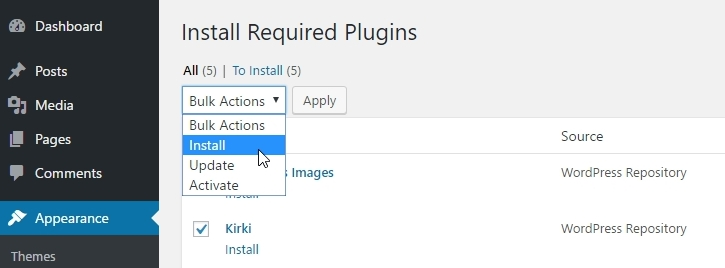 - Wait until the installation is finished then click Return to Required Plugins Installer to go back to the plugin list again.
-
Now tick all of them and choose Activate then click Apply.
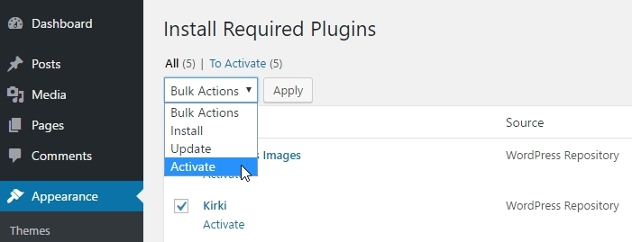 - That's it! The plugins are now installed and activated. You should see a complete message in this step.
3. Import Dummy Data
Please follow the steps below for importing the dummy data file to get most posts and pages like the demo site.
- Go to Tools > Import and click the WordPress link from the list. (Note that at this step, you may first need to install a WordPress Importer tool.) After that, click Run Importer.
- Click the Choose File button then browse to the theme package. You will see an XML file named jeannedummy.wordpress.2018-09-15.xml. Select it and click Upload file and import.
- You will be brought to the screen as showing on the right. Don't forget to check the Download and import file attachments checkbox before clicking the Submit button. Then wait until you see the message "All done. Have fun!".
If you are not sure what it is all about, please contact your web hosting. They should be able to help you out in this technical case.
4. Complete the Setup
The theme is almost ready. There are only a few steps left to complete the setup:
- Go to Appearance > Menus and scroll down to the bottom. There you will see a checkbox for Main Menu as showing on the right. Tick it and save the menu.
-
Go to Settings > Reading and select the options as following:
- Front page: > select "Home"
- Posts page: > select "Blog"
Note that "Front page" is for selecting a page to be used as homepage. "Posts page" is for a page to be used to display your blog posts. -
You might want to change the site title now. To do that, go to Appearance > Customize > Site Identity and there you will see the option for changing the title or uploading a logo image.
- Based on the demo site, it only shows the portfolio items from the Featured category on the homepage. To do that, go to Appearance > Customize > Theme Settings > Portfolio Settings and select only the "Featured" category under the Featured Works Template section.
- All done! Now your site should have all the data as showing on the demo site and the setup is complete!
Image Dimension Guideline
Default image dimensions that are used in the theme are as following:
-
Portfolio's Featured Images: The recommended width is 1140px with flexible height.
-
Images on Portfolio Single Pages: You can actually upload any sizes. The theme will pick the best size when displaying in the grid, and the full-size image will display on the lightbox.
-
Blog and Page Images (Featured Image): The recommended width is 1140px with flexible height.
You can see the online examples from here: http://themes.uxbarn.com/wp/jeanne-dummy/
Customizer
You can use the customizer to change the styles and settings of the theme. There are three main sections: Typography, Colors, and Theme Settings. The Typography section is for adjusting any font-related options. The Colors section is for adjusting colors. And the Theme Settings section is for other options that are not related to the style adjustment.
You can also put your custom CSS into the "Additional CSS" section. If you are not sure how to find the correct HTML/CSS elements you want to adjust, we would recommend using the Developer Tools on Chrome or Firebug on Firebox to inspect the elements on the page.
More info about it here: https://uxbarn.com/inspecting-elements-developer-tools/
You can open the customizer screen by going to the Appearance > Customize menu.
How to create and display portfolio
-
First, go to Portfolio > Add New Portfolio Item to start adding your work. On the portfolio edit screen, you can upload the Featured Image and it will be used as the item image on the portfolio templates.
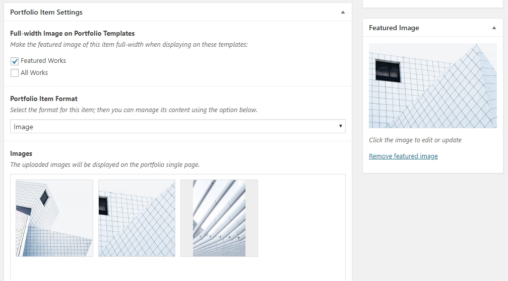
In the Portfolio Item Settings box, there are three options as following:- Full-width Image on Portfolio Templates: Normally, the theme will display the image in the flexible grid, but if you want to expand the image of this item to the full-width when displaying on the portfolio templates, you can use this option.
- Portfolio Item Format: You can use this option to change the type of the portfolio content. There are three formats you can choose: Image, Video, or Mixed.
- Images/Video/Mixed Content: This option will change depending on the selected format.
-
Now you have got all portfolio items you want to show on the front end. At this step, go to Pages > Add New to create a new page to be used as a portfolio listing page.
On the page edit screen, enter the page title then look at the right side and you will find a box called Page Attributes. Under the Template option, there are two templates to choose from.

Both templates are quite similar as they can be used to show your works except that there are some different options you can set in Appereance > Customize > Theme Settings > Portfolio Settings.
Sample Scenario: Based on the demo site, you can use the Featured Works template on the homepage to show the works of a specific category; for example, the Featured category. At the same time, you might want to have another page to show the works from all categories; you can then use the All Works template for that.
In this case, we will select the Featured Works template for this page. Then we open the customizer and go to the Portfolio Settings as mentioned above to make it show only the works from the Featured category.
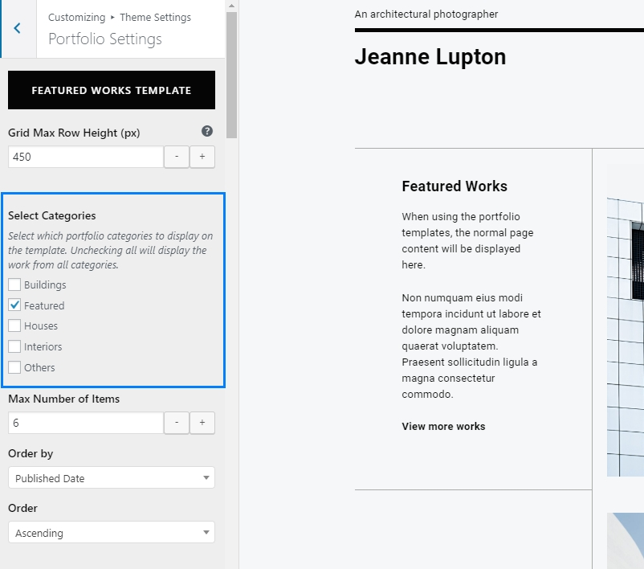When you view this page on the front end, you will see the works showing up.
 TIP: If you want to select more or manage which portfolio categories to display, you can go to Appearance > Customize > Theme Settings > Portfolio Settings.
TIP: If you want to select more or manage which portfolio categories to display, you can go to Appearance > Customize > Theme Settings > Portfolio Settings. - That's it for how to create and show your portfolio. When you click on any portfolio item, you will then see its single page that displays the content you added in step 1.
How to change the portfolio slugs
Go to Appearance > Customize > Theme Settings > Portfolio Settings and scroll down to the bottom. Then you will see the options to edit the portfolio slugs. After changing, go to Settings > Permalinks and click save to make the new slug work.
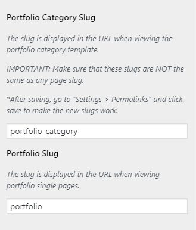
How to disable the lightbox on portfolio single pages
Go to Appearance > Customize > Theme Settings > Portfolio Settings and you will find the option there.
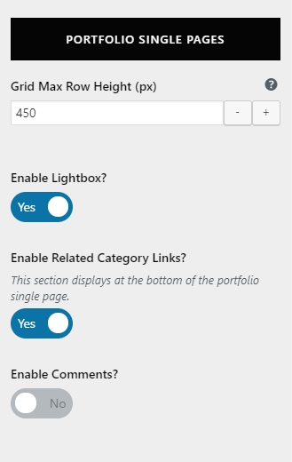
How to show or hide the search button
You can find the option in the Appearance > Customize > Theme Settings > General Settings section.
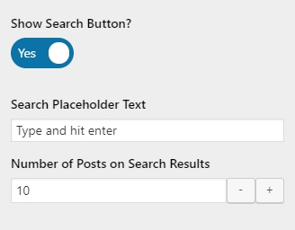
How to edit the copyright text and social icons
Go to Appearance > Customize > Site Identity and you will find the options to edit both copyright text and social icon URLs.
How to hide or show the widget area
Go to Appearance > Customize > Theme Settings > General Settings, and you will find the options for hiding or showing the widget area and the number of columns you want in the area.
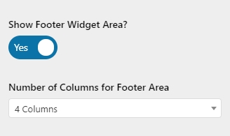
To manage widgets, you can go to Appearance > Widgets or Appearance > Customize > Widgets. The widgets will be displayed at the bottom of the site.
How to translate the theme
You can follow these steps to translate the theme into your language. Note that this is not the same as creating a multilingual site (multiple languages). To create the multilingual site, you would need to use WPML plugin for that.
So, let's begin translating the theme:
- Download and install the Poedit software: http://www.poedit.net/download.php
- In the extracted theme ZIP file, go to the /jeanne/languages folder and you will see a file named jeanne.pot in there. Open the file with the Poedit that you just install. Once opened, you will see all the English texts of the theme.
-
Click on the "Create new translation" button. Make sure to select the target language with country in parenthesis.
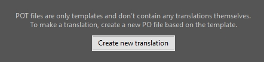 - Translate the texts then save. After saving, you will get new PO and MO files for your language. For example, if your translation language is German (Germany), the Poedit will create the files as "de_DE.po" and "de_DE.mo" for you.
-
Upload the de_DE.mo file into the /languages folder of your installed theme directory on your server. The path should be like:
[root]/wp-content/themes/jeanne/languages - On your admin panel, go to Settings > General > Site Language and you can select your language here.
- That's it. WordPress should now load the translated text for the theme.
How to update the theme and plugins
There are 2 methods to update the theme. You can choose whether to update the theme via the Envato Market plugin, or manually update it via FTP.
Method 1: Update the theme via the Envato Market plugin
This method assumes that you already have the Envato Market plugin activated as stated in the Installation > Install Plugins section in this documentation.
The idea of this plugin is that, you create and save a token and the plugin will list the items you purchased on the Envato Market (ThemeForest, CodeCanyon, for examples). You can then update the items easily via WordPress.
- Let's start setting the plugin. On your admin panel, go to Envato Market menu.
-
You will see the screen similar to the image below:
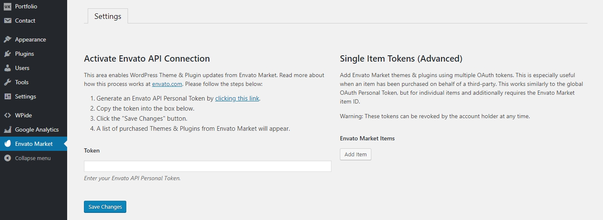 -
There are 2 options to choose:
For Envato API Connection, it is suitable if this is your own website; so, once a token is saved, the plugin will list all the purchased items here. To start creating a token, click on the link on the page.
You may then see the login page, just login with your account that is used to purchase the theme. Now you will see the screen like this for creating a new token:
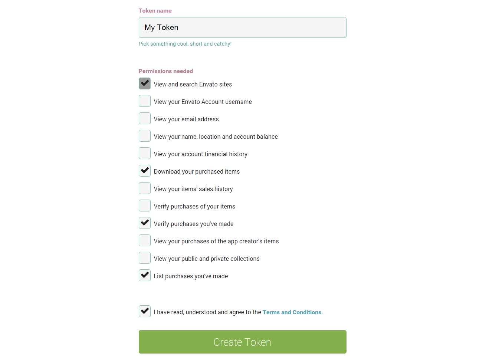Select the permissions as showing in the above picture and click "Create Token". You will finally see a screen showing the created token. Copy that token and put it into the "Token" field on the Envato Market plugin page.
After saving, you will see all of the purchased items under the account that is used to create the token.
For Single Item Tokens, it is suitable if you create this website for your client so you can specify which items to display. The plugin will list only the added items. The overall concept is similar to the first one. Once you click the "Add Item" button, you will see this popup window:
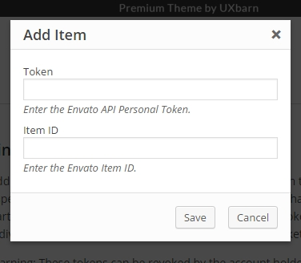Use the same steps as the above global token's to create a new token. Or if you already have one, put it into the "Token" field here. For the item ID, just go to the item page on ThemeForest website then look at the browser's URL field. You will see a number like this "11354296" (it should be right after the item name). Copy and put it into the "Item ID" field then click "Save".
That's all for the plugin setting. With this plugin, you can update the theme using the Envato Market menu and you will also be able to see the available theme updates on the WordPress Updates page. The plugin will check for any updates periodically and add them into the WP Updates list.
Method 2: Update the theme via FTP
- Go to your Download page of your account at ThemeForest.net and download the latest version of the theme.
-
Extract the main theme package, and you will see a theme ZIP file named jeanne.zip. Extract it. You will get an actual theme folder ("jeanne" folder). Then upload all the theme files (only the files inside) into the current installed theme directory on your server using FTP, replacing any existing ones. Note that the theme path on your server should look like this:
[root]/wp-content/themes/jeanne/ - That's all!
Update bundled plugins
After updating the theme, now back to your admin dashboard, you may see a notification like the screenshot below:
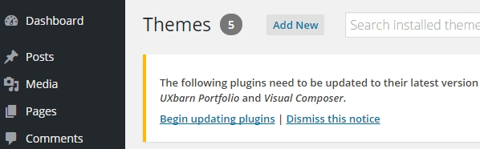
If you see this, it means that the new version of the theme also includes the new version of the bundled plugins (in this case, they are UXBARN Portfolio and Visual Composer).
-
So, let's update the plugin by clicking the Begin updating plugin link in the notification area or, go to Appearance > Install Plugins. Then tick all of them, select "Update" from the select list, and click "Apply":
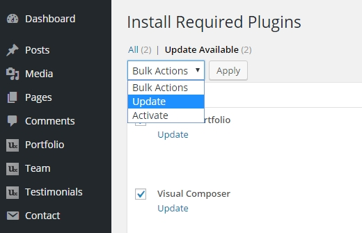 - Wait until you see the complete message. Done!
"W ... Wait! Some plugin can't be updated! I got an error message. What to do?"
If there is a problem with some plugin while updating via WordPress, you can manually upload the plugin to your WordPress site via FTP. Just use an FTP client like FileZilla to connect to your host, then go to the plugin path which should look like this: [root]/wp-content/plugins/.
Now on your local machine, open the purchased package, extract the theme ZIP file, go to this path: /jeanne/includes/plugin-packages/ and you will see all of the bundled plugin ZIP packages. Extract the one that has the problem and upload just the folder inside into your WP's plugin path on your host, replacing the old one. For example, when you extract the "uxbarn-portfolio_1.2.1.zip" plugin ZIP package, you will see a folder inside which is "uxbarn-portfolio" -- this is the one to be uploaded to your host.
Credits
jQuery plugins:
| jQuery Plugin | URL |
|---|---|
| Fancybox | http://fancyapps.com |
| flexImages | https://github.com/Pixabay/jQuery-flexImages |
| SlickNav | http://slicknav.io/ |
| Superfish | http://users.tpg.com.au/j_birch/plugins/superfish/ |
Icon fonts from:
| Name | URL |
|---|---|
| Font Awesome | http://fontawesome.io/ |
Once again, thank you so much for purchasing the theme. As we said at the beginning, we'd be glad to help you if you have any questions relating to this theme. No guarantees, but we'll do our best to assist. If you have a more general question relating to the themes on ThemeForest, you might consider visiting the forums and asking your question in there.
UXBARN